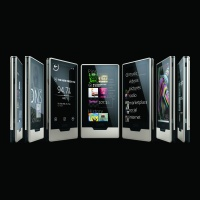

Zune HD available for pre-order today
Microsoft's new portable digital media player available for online pre-order at Amazon, Best Buy, Walmart, and Microsoft Store
By Microsoft Corporation, Published 13th August 2009
REDMOND, Wash. - August 13, 2009 Zune HD, the next generation of Microsoft Corp.'s portable digital media player, is available now for pre-order and is set to hit store shelves on Sept. 15. The player, available in 16GB and 32GB capacities, is the first touch-screen Zune and includes powerful playback technology to give you a different way to experience media on the go. Combined with unparalleled PC software and online services such as Zune Pass, Zune provides a rich and meaningful connection to music, videos, podcasts and more.
Pre-order Zune HD in 16GB Black and 32GB Platinum through www.zune.net/zunehd from Amazon.com, Best Buy, Walmart and Microsoft. Beginning Sept. 15, at www.ZuneOriginals.net, both 16GB and 32GB capacities of Zune HD will be available in Black, Platinum (Silver), Blue, Green and Red colours and with the option to customise your player with one of 10 new engravings designed by guest artists.
With a sleek and stylish design, Zune HD is the first to combine these features:
- Built-in HD Radio receiver. Allows you to listen to higher-quality sound than is available from traditional radio channels, as well as access additional programming through HD2 and HD3 multicast channels from many of your favourite local FM radio stations at no extra cost.
- HD video output capabilities. Supports HD video playback from the device through a premium HDMI A/V docking station (sold separately) directly to an HDTV in 720p, making it easy to enjoy better-than-DVD-quality video on your own big screen at home.
- OLED touch screen. Allows you to easily flip through music, movies and other content. The 3.3-inch glass screen and 16:9 widescreen format display (480x272 resolution) offer a premium viewing experience.
- Built-in Wi-Fi. Allows for browsing, streaming or downloading new music from Zune Marketplace.
- Internet browser. Full-screen Web browsing, optimised for the multitouch screen with zoom-in and zoom-out gestures.
- Accessories, at home and on the road. Zune HD and AV Dock charges and syncs players while playing supported 720p HD videos on HDTVs. Play HD Radio, music and podcasts from your Zune HD device through your car stereo using the Zune Premium Car Pack.
Hot Features
- Wireless browsing and buying on the fly. Zune HD includes a new Web browser you can use to visit your favourite Web sites and bookmark favourites when in range of Wi-Fi. You can also connect directly to the Zune Marketplace via Wi-Fi, to purchase or stream music directly over the air or at home. Browse new releases, view top songs and albums by genre, or use the on-screen keypad to search for favourite songs.
- Buying Directly from Radio. With Zune, you can instantly tag and purchase songs you hear on FM or HD Radio directly from your device. If you are in a Wi-Fi hot spot, you can choose to immediately download to your Zune device. If not, you will have a queue of songs ready to download when you connect to your home computer or get to a hot spot.
- Zune Pass Explore music with the Zune Pass subscription, which gives you instant access to millions of available songs for about the price of one CD per month ($14.99). The Zune Pass allows you to select 10 tracks per month to keep and add to your permanent collection. Use Zune Pass to download or stream music to your PC or directly to your Zune.
- Zune Marketplace online store Explore music, videos and podcasts on your PC through Zune software.The Zune Marketplace offers more than 5 million songs, 85 percent of which are available as digital rights management (DRM)-free MP3s; more than 10,000 music videos; a broad range of television shows; and more than 10,000 audio and video podcasts as well as playlists and custom recommendations.
- Zune Social online music community. Connect with like-minded fans and get new music recommendations based on what they are listening to now. Zune Social lets you capture and share music via the Zune Card, a real-time playlist of your favourite and recently played tracks that lives on the Web, in your Zune software and on your device.
- Wireless sync. Cut the cord to your PC. Refresh your Zune with new content while you charge your device. Connect to your PC through your home wireless network by setting your Zune to automatically sync the latest podcasts, music and more from your stereo dock, AC adapter or speaker dock accessory.
HD Radio
HD Radio broadcasting is local AM and FM stations upgraded to digital technology, which enables them to offer much higher quality sound than traditional radio: digital AM sounds like stereo FM; and FM sounds like CDs. And, FM stations broadcast multiple new digital channels- HD2/HD3 multicast channels. HD Radio service is 100% subscription free. Both AM and FM can offer text information including song and artist data, live weather and real-time traffic updates, local news, sports scores and school closings.
More than 1,900 stations are broadcasting with HD Radio technology and are offering more than 1,000 new digital channels. A full list of local HD Radio stations can be found at www.hdradio.com. Zune HD will bring this quality sound and new content to users on the go.
HD Radio is a proprietary trademark of iBiquity Digital Corporation, the company that developed the technology. The "HD" is part of iBiquity Digital's brand name for its advanced digital AM/FM system. It does not mean hybrid digital or high-definition digital.
More information on Zune and related images is available at http://www.zune.net/press and http://www.zune.net/ZuneHD
About Zune
Zune is Microsoft's music and entertainment brand that provides an integrated digital entertainment experience. The Zune platform includes a line of portable digital media players, elegant software, the Zune Marketplace online store, and the Zune Social online music community, created to help people discover music. Zune is part of Microsoft's Entertainment and Devices Division and supports the company's software-based services vision to help drive innovation in the digital entertainment space. More information can be found online at http://www.zune.net/en-us/press.
* Supported 720p HD video files play on the device, downscaled to fit the screen at 480 x 272 - not HD resolution. Zune HD and AV Dock, and an HDTV (all sold separately) are required to view video at HD resolution.
HD Radio and the HD Radio logo are proprietary trademarks of iBiquity Digital Corp.